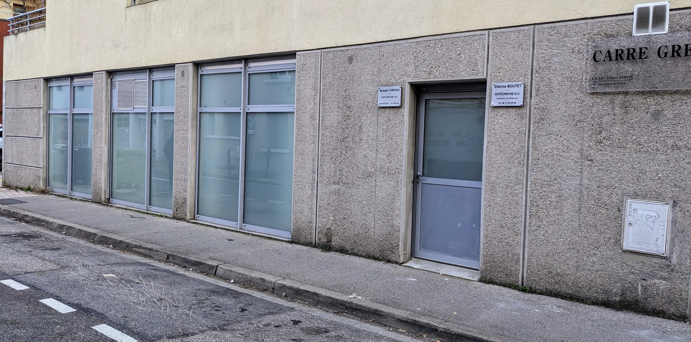
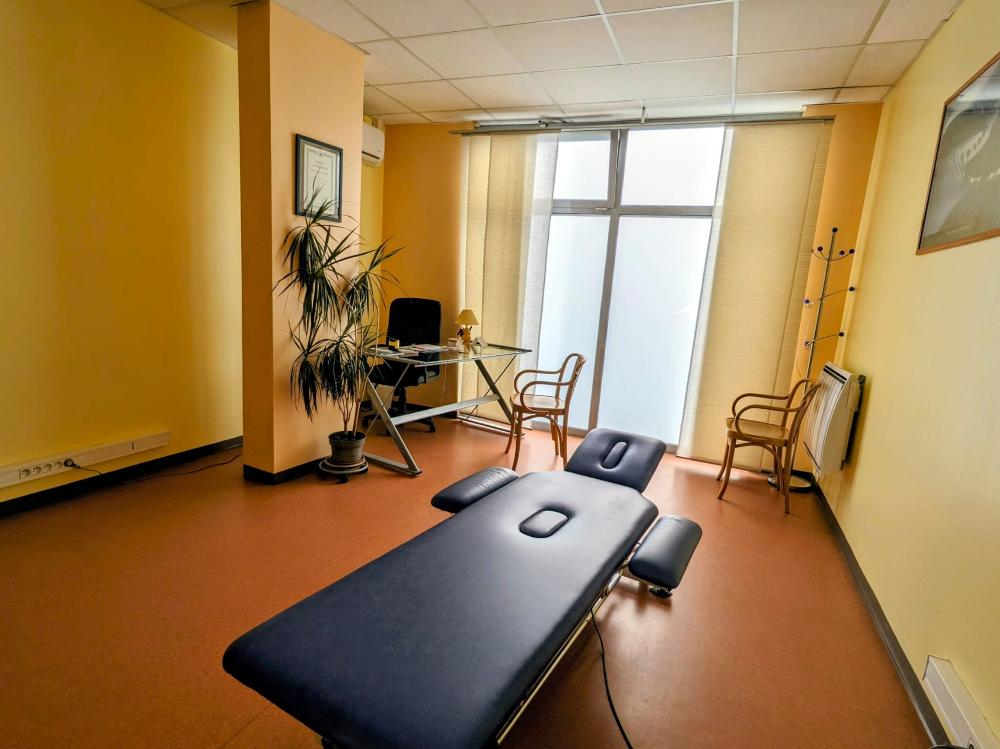

📍 Adresse
Cabinet d'Ostéopathie
6 Rue Anthoard
38000 Grenoble - Europole
📞 Téléphone
Mickaël FORCIOLI :
04 76 46 46 70
Réserver un rendez-vous
Étienne BOUTET :
06 73 62 69 92
Prendre RDV sur
Doctolib
🕐 Horaires
| Lundi - Vendredi | 8h30 - 19h00 |
| Samedi | 9h00 - 13h00 |
| Dimanche | Fermé |
📅 Prendre rendez-vous
Contactez-nous par téléphone ou prenez RDV en ligne avec Étienne sur Doctolib.
Nous trouver
🚗 Accès
- En voiture : Stationnement dans la rue du cabinet
- En tram : Arrêt Saint-Bruno - Gare (Ligne A)
Arrêt Palais de Justice - Gare (Ligne B) - En bus : Lignes 13, 16
⭐ Avis Google
Mickaël FORCIOLI
Voir tous les avis GoogleÉtienne BOUTET
Voir tous les avis GoogleNotre Cabinet

Entrée du cabinet

Salle d'attente

Cabinet de Mickaël

Cabinet d'Étienne